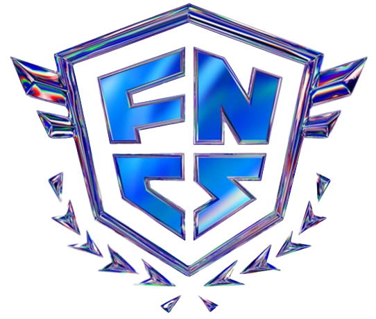

Busca información sobre las rankeds aquí.
La FNCS (Fortnite Championship Series) es el evento competitivo más importante de Fortnite. Esta se celebra una vez por temporada del juego. Las FNCS se celebran por regiones (Europa, NA, Bazil...) y te clasifican a la FNCS Global Series, más conocido como "mundial", donde te enfrentas a los mejores jugadores del año en sus régiones basandose en su rendimiento en la FNCS.
La FNCS se inaguró en la Temporada X y se ha celebrado todas las temporadas desde entonces (excluyendo la Temporada Orígenes). Esta se ha celebrado en todos los modos de juego del Battle Royale, pero recientente se ha comenzado a celebrera exclusibamente en dúos.
Hay un total de 28 ganadores de FNCS, estos son los 5 con más primeros puestos:
Lee la Fortnite Wiki sobre la historia de la FNCS para conocer más detalles.